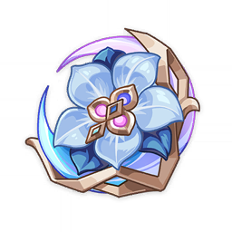

Genshin Impact · Versión 7.2
Análisis del Rol y Escalado
Ineffa es un personaje de elemento Electro originario de Nod-Krai que utiliza Lanza y se posiciona en el tier T0 (SS) Sub-DPS dentro del rol de Sub-DPS & Escudera Electro de Electrocargado Lunar (Escala con ATQ). Su rendimiento en combate gira en torno a este eje principal: Escudo y pasiva Lunar escalan con ATQ hasta 2,000 ATQ + Crítico/ME.
Para maximizar su aporte en el equipo, la configuración prioritaria combina Halo Fracturado con el conjunto de artefactos Aubade of Morningstar and Moon (4 piezas), respetando la jerarquía de estadísticas Daño Crítico > Prob. Crítica > ATQ% (meta 2,000) > Maestría Elemental (300+). y subiendo sus habilidades en orden: Habilidad Elemental (E) > Definitiva (Q) >>> Ataques Normales.
Mejores Armas
Opciones recomendadas ordenadas por rendimiento según el meta actual y compatibilidad con sus rotaciones:
-
 Halo Fracturado ★★★★★BiS Firma66.2% Daño Crítico; +24% ATQ y +40% Daño de Electrocargado Lunar para todo el equipo al crear escudo.
Halo Fracturado ★★★★★BiS Firma66.2% Daño Crítico; +24% ATQ y +40% Daño de Electrocargado Lunar para todo el equipo al crear escudo. -
 Báculo de las Arenas Escarlatas ★★★★★Alternativa 5★44.1% Prob. Crítica y convierte Maestría Elemental en ATQ.
Báculo de las Arenas Escarlatas ★★★★★Alternativa 5★44.1% Prob. Crítica y convierte Maestría Elemental en ATQ. -
 Ruinas Ensangrentadas ★★★★★Alternativa 5★674 ATQ base, 22.1% Prob. Crítica y +36% Daño Electrocargado Lunar.
Ruinas Ensangrentadas ★★★★★Alternativa 5★674 ATQ base, 22.1% Prob. Crítica y +36% Daño Electrocargado Lunar. -
 Azada Excavatesoros ★★★★Mejor F2P Forja41.3% ATQ%; +48% Electrocargado y +24% Electrocargado Lunar.
Azada Excavatesoros ★★★★Mejor F2P Forja41.3% ATQ%; +48% Electrocargado y +24% Electrocargado Lunar. -
 Cruz de Kitain ★★★★Opción 4★ Forja ER110 ME y regenera Energía plana fuera de campo.
Cruz de Kitain ★★★★Opción 4★ Forja ER110 ME y regenera Energía plana fuera de campo.
Mejores Sets de Artefactos
Combinaciones de 4 piezas o mezclas de 2 piezas para maximizar su contribución:
-

Aubade of Morningstar and Moon (4 piezas) BiS Daño Personal+80 ME (2p); +20%/60% Daño de Reacción Lunar mientras está fuera de campo.
-
 Silken Moon's Serenade (4 piezas) BiS Soporte Lunar
Silken Moon's Serenade (4 piezas) BiS Soporte Lunar+20% ER; +60/120 ME al equipo y +10% Daño Lunar si Columbina lleva Aubade.
Estadísticas Principales y Secundarias
Atributos prioritarios en artefactos para un balance óptimo de daño o soporte:
| Pieza | Estadística Principal |
|---|---|
| Reloj (Arenas) | ATQ% |
| Cáliz | ATQ% |
| Corona | Prob. Crítica ≥ Daño Crítico |
Prioridad de Subestadísticas
- Daño Crítico > Prob. Crítica > ATQ% (meta 2,000) > Maestría Elemental (300+).
Prioridad de Talentos
Habilidad Elemental (E) > Definitiva (Q) >>> Ataques Normales
Objetivos de Estadísticas (Nivel 90)
Valores de referencia verificados para evaluar el equipamiento de Ineffa en nivel 90 con artefactos de 5 estrellas:
| Atributo | Meta Recomendada |
|---|---|
| Vida | 17,000 |
| Ataque | 2,000 ATQ |
| Defensa | 750 |
| Maestría Elemental | 300+ ME |
| Recarga de Energía | 110–140% (130–170% Solo) |
| Balance Crítico | 60% – 70% CR / 150%+ CD |
Talentos de Combate y Materiales (Nivel 1 al 10)
Habilidades principales de Ineffa y desglose exacto de libros, materiales y Mora para mejorar sus talentos:


Composiciones de Equipo Recomendadas
Alineaciones con mayor sinergia elemental y amplificación de daño en el Abismo y Teatro Fantasía:
Electrocargado Lunar con Flins
Flins • Sucrose • Columbina • Ineffa
Equipo insignia de Electrocargado Lunar.
Núcleo Bineffa Universal
Columbina • Ineffa • Sucrose • Neuvillette
Core Columbina + Ineffa compatible con cualquier driver Hydro/Anemo.
Materiales de Ascensión (Nivel 1 al 90)
Recursos totales requeridos para desbloquear las 6 fases de ascensión de Ineffa. Coste total de Mora en ascensiones: 420.000 Mora.


Sinergias y Guías Relacionadas
Explora las fichas de armas, artefactos y materiales de los principales compañeros de equipo para Ineffa: